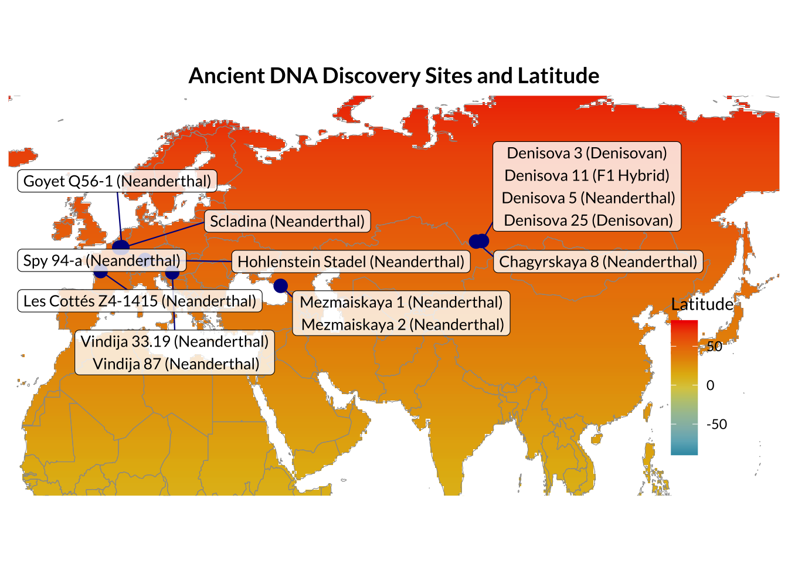
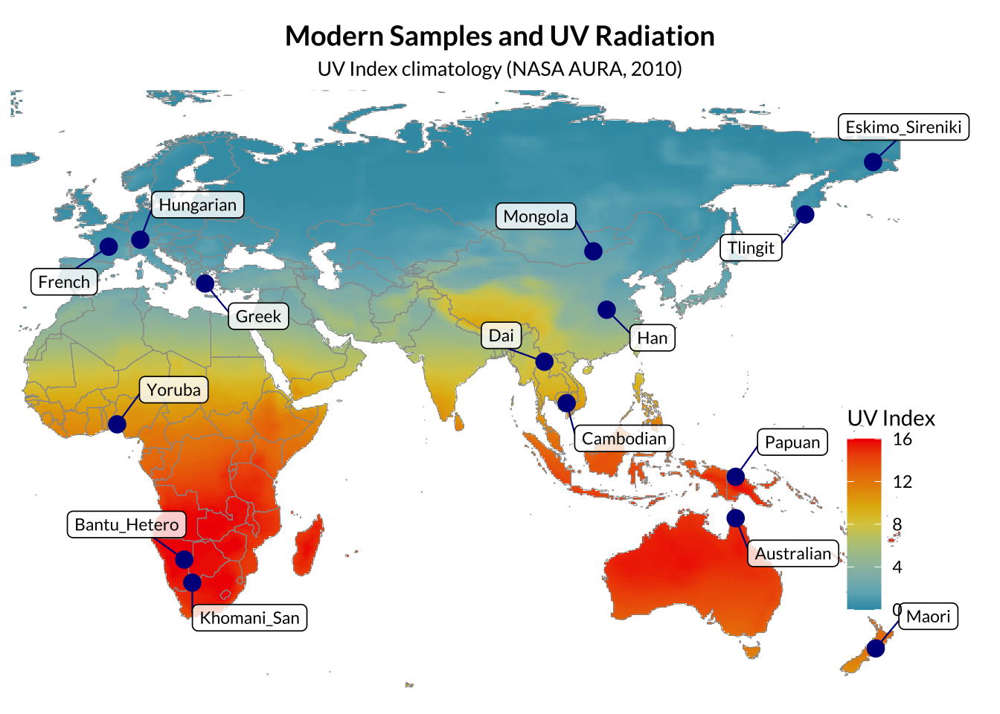
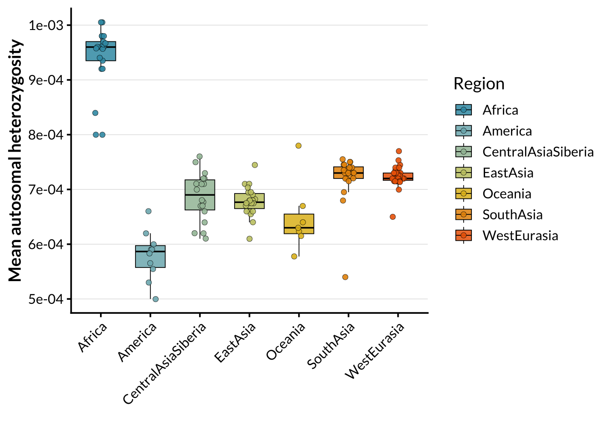
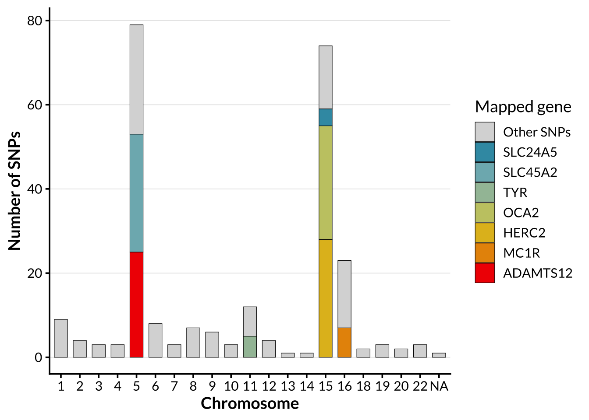

Last updated: 2026-04-16
Checks: 7 0
Knit directory: ~/Documents/GitHub/PAINT/
This reproducible R Markdown analysis was created with workflowr (version 1.7.2). The Checks tab describes the reproducibility checks that were applied when the results were created. The Past versions tab lists the development history.
Great! Since the R Markdown file has been committed to the Git repository, you know the exact version of the code that produced these results.
Great job! The global environment was empty. Objects defined in the global environment can affect the analysis in your R Markdown file in unknown ways. For reproduciblity it’s best to always run the code in an empty environment.
The command set.seed(20251106) was run prior to running
the code in the R Markdown file. Setting a seed ensures that any results
that rely on randomness, e.g. subsampling or permutations, are
reproducible.
Great job! Recording the operating system, R version, and package versions is critical for reproducibility.
Nice! There were no cached chunks for this analysis, so you can be confident that you successfully produced the results during this run.
Great job! Using relative paths to the files within your workflowr project makes it easier to run your code on other machines.
Great! You are using Git for version control. Tracking code development and connecting the code version to the results is critical for reproducibility.
The results in this page were generated with repository version 9fd9ad2. See the Past versions tab to see a history of the changes made to the R Markdown and HTML files.
Note that you need to be careful to ensure that all relevant files for
the analysis have been committed to Git prior to generating the results
(you can use wflow_publish or
wflow_git_commit). workflowr only checks the R Markdown
file, but you know if there are other scripts or data files that it
depends on. Below is the status of the Git repository when the results
were generated:
Ignored files:
Ignored: .RData
Ignored: .Rhistory
Ignored: .Rproj.user/
Ignored: analysis/.Rhistory
Ignored: analysis/.Rproj.user/
Ignored: analysis/depth_spinoff.Rmd
Ignored: data/allele_ref.txt
Ignored: data/ancient.projected.log
Ignored: data/ancient_aligned.bed
Ignored: data/ancient_aligned.bim
Ignored: data/ancient_aligned.fam
Ignored: data/ancient_aligned.log
Ignored: data/ancient_depth.csv
Ignored: data/ancient_depth_clean.csv
Ignored: data/ancient_matched.bed
Ignored: data/ancient_matched.bim
Ignored: data/ancient_matched.fam
Ignored: data/ancient_matched.log
Ignored: data/ancient_metadata.csv
Ignored: data/ancient_pigment.bed
Ignored: data/ancient_pigment.bim
Ignored: data/ancient_pigment.fam
Ignored: data/ancient_pigment.log
Ignored: data/ancient_pigmentation.bed
Ignored: data/ancient_pigmentation.bim
Ignored: data/ancient_pigmentation.fam
Ignored: data/ancient_pigmentation.log
Ignored: data/ancient_pigmentation.projected.log
Ignored: data/ancient_pigmentation.vcf.gz
Ignored: data/ancient_pigmentation.vcf.gz.tbi
Ignored: data/ancient_temp.bed
Ignored: data/ancient_temp.bim
Ignored: data/ancient_temp.fam
Ignored: data/ancient_temp.log
Ignored: data/ancient_temp.pgen
Ignored: data/ancient_temp.psam
Ignored: data/ancient_temp.pvar
Ignored: data/modern_matched.bed
Ignored: data/modern_matched.bim
Ignored: data/modern_matched.fam
Ignored: data/modern_matched.log
Ignored: data/modern_matched.pgen
Ignored: data/modern_matched.psam
Ignored: data/modern_matched.pvar
Ignored: data/modern_metadata.csv
Ignored: data/neo_uvi.csv
Ignored: data/pigmentation.cleaned.log
Ignored: data/pigmentation.cleaned.pgen
Ignored: data/pigmentation.cleaned.psam
Ignored: data/pigmentation.cleaned.pvar
Ignored: data/pigmentation.freq.afreq
Ignored: data/pigmentation.freq.log
Ignored: data/pigmentation.pca.eigenvec.allele
Ignored: data/pigmentation.pca.log
Ignored: data/pigmentation_freq.log
Ignored: data/pigmentation_merged-merge.psam
Ignored: data/pigmentation_merged-merge.pvar
Ignored: data/pigmentation_merged.log
Ignored: data/pigmentation_snps.bed
Ignored: data/pigmentation_snps.bim
Ignored: data/pigmentation_snps.csv
Ignored: data/pigmentation_snps.fam
Ignored: data/pigmentation_snps.fixed.bed
Ignored: data/pigmentation_snps.fixed.bim
Ignored: data/pigmentation_snps.fixed.fam
Ignored: data/pigmentation_snps.fixed.log
Ignored: data/pigmentation_snps.fixed.pgen
Ignored: data/pigmentation_snps.fixed.psam
Ignored: data/pigmentation_snps.fixed.pvar
Ignored: data/pigmentation_snps.vcf.gz
Ignored: data/pigmentation_snps.vcf.gz.tbi
Ignored: data/pigmentation_snps_freq.afreq
Ignored: data/sgdp.wg.afreq
Ignored: data/sgdp.wg.fixed.afreq
Ignored: data/sgdp.wg.pca.eigenvec.allele
Ignored: data/simons_metadata.csv
Ignored: data/simons_whole.csv
Ignored: plink2.log
Ignored: plink2.zip
Ignored: test.log
Note that any generated files, e.g. HTML, png, CSS, etc., are not included in this status report because it is ok for generated content to have uncommitted changes.
These are the previous versions of the repository in which changes were
made to the R Markdown (analysis/introduction.Rmd) and HTML
(docs/introduction.html) files. If you’ve configured a
remote Git repository (see ?wflow_git_remote), click on the
hyperlinks in the table below to view the files as they were in that
past version.
| File | Version | Author | Date | Message |
|---|---|---|---|---|
| Rmd | 9fd9ad2 | Lily Heald | 2026-04-16 | Update maps |
| html | 61b18b9 | Lily Heald | 2026-04-16 | Build site. |
| Rmd | f38d843 | Lily Heald | 2026-04-16 | Update map |
| html | 9364493 | Lily Heald | 2026-04-16 | Build site. |
| Rmd | a9a78d1 | Lily Heald | 2026-04-16 | Update map |
| html | 04d0951 | Lily Heald | 2026-04-16 | Build site. |
| Rmd | 6d227c0 | Lily Heald | 2026-04-16 | Update map |
| html | 0bc159a | Lily Heald | 2026-04-14 | Build site. |
| Rmd | 19f2e7a | Lily Heald | 2026-04-14 | Update aDNA discovery sites |
| html | 1215294 | Lily Heald | 2026-04-14 | side-by-side PCA figures |
| Rmd | 3dc54a6 | Lily Heald | 2026-04-14 | wflow_publish(c("analysis/pca.Rmd", "analysis/introduction.Rmd")) |
| html | cec0d9c | Lily Heald | 2026-04-08 | Build site. |
| html | 9976e88 | Lily Heald | 2026-04-08 | Build site. |
| html | f2c0937 | Lily Heald | 2026-04-08 | Add mixed effects model |
| Rmd | c6a3c43 | Lily Heald | 2026-04-08 | wflow_publish(c("analysis/depth.Rmd", "analysis/introduction.Rmd")) |
| html | e22ec65 | Lily Heald | 2026-03-29 | Build site. |
| html | d44f320 | Lily Heald | 2026-03-29 | change theme |
| Rmd | 216fc6e | Lily Heald | 2026-03-27 | Update text |
| html | 8ba64ee | Lily Heald | 2026-03-26 | Build site. |
| Rmd | 76dfe29 | Lily Heald | 2026-03-26 | wflow_publish("analysis/introduction.Rmd") |
| html | 0848e66 | Lily Heald | 2026-03-26 | Build site. |
| Rmd | 8b9cf18 | Lily Heald | 2026-03-26 | Update modern samples map |
| html | 2b2fe92 | Lily Heald | 2026-03-26 | Update introduction |
| html | 4c4faee | Lily Heald | 2026-03-26 | Build site. |
| Rmd | 9c64835 | Lily Heald | 2026-03-26 | wflow_publish("analysis/introduction.Rmd") |
| html | 68a40d3 | Lily Heald | 2026-03-26 | Build site. |
| html | a713e79 | Lily Heald | 2026-03-26 | Create summary tables |
| Rmd | 325e8b2 | Lily Heald | 2026-03-26 | wflow_publish("analysis/introduction.Rmd") |
| html | 814636a | Lily Heald | 2026-03-26 | Build site. |
| Rmd | 33e4846 | Lily Heald | 2026-03-26 | wflow_publish("analysis/introduction.Rmd") |
| html | b1060b3 | Lily Heald | 2026-03-26 | Build site. |
| Rmd | a154fb2 | Lily Heald | 2026-03-26 | wflow_publish("analysis/introduction.Rmd") |
| html | 9264fbc | Lily Heald | 2026-03-26 | Build site. |
| Rmd | 1d15761 | Lily Heald | 2026-03-26 | wflow_publish("analysis/introduction.Rmd") |
| html | ce1571b | Lily Heald | 2026-03-26 | Build site. |
| html | a008c4f | Lily Heald | 2026-03-26 | Build site. |
| Rmd | 05c4750 | Lily Heald | 2026-03-26 | stack snp distribution |
| html | 05c4750 | Lily Heald | 2026-03-26 | stack snp distribution |
| Rmd | a476f32 | Lily Heald | 2026-02-10 | Update introduction |
| html | a476f32 | Lily Heald | 2026-02-10 | Update introduction |
| html | 189b205 | Lily Heald | 2026-02-10 | Update introduction |
| Rmd | 6165154 | Lily Heald | 2026-02-10 | Update introduction |
| Rmd | c555bc3 | Lily Heald | 2026-02-10 | Clean bar chart |
| html | c555bc3 | Lily Heald | 2026-02-10 | Clean bar chart |
| html | 5cd4031 | Lily Heald | 2026-02-09 | Update introduction |
| Rmd | 4ea9339 | Lily Heald | 2026-02-09 | Update introduction |
| Rmd | 441e6fe | Lily Heald | 2026-02-09 | echo false for clean workflowr |
| html | 441e6fe | Lily Heald | 2026-02-09 | echo false for clean workflowr |
| Rmd | 790813f | Lily Heald | 2026-02-09 | add distribution of simons genomes |
| html | 790813f | Lily Heald | 2026-02-09 | add distribution of simons genomes |
| Rmd | 4a52a41 | Lily Heald | 2026-02-04 | Add distribution bar chart |
| html | 4a52a41 | Lily Heald | 2026-02-04 | Add distribution bar chart |
| Rmd | 289d9ed | Lily Heald | 2026-01-30 | add den3 |
| html | 289d9ed | Lily Heald | 2026-01-30 | add den3 |
| Rmd | fe99e78 | Lily Heald | 2026-01-14 | add Denisova 25 |
| html | fe99e78 | Lily Heald | 2026-01-14 | add Denisova 25 |
| Rmd | 2cac6c9 | Lily Heald | 2026-01-14 | add vindija 87 |
| html | 2cac6c9 | Lily Heald | 2026-01-14 | add vindija 87 |
| Rmd | c6f38f2 | Lily Heald | 2026-01-14 | Add Chag8 |
| html | c6f38f2 | Lily Heald | 2026-01-14 | Add Chag8 |
| Rmd | 7bb18d4 | Lily Heald | 2025-11-20 | update sample names |
| Rmd | 9ac4aca | Lily Heald | 2025-11-20 | add mez2 |
| html | 9ac4aca | Lily Heald | 2025-11-20 | add mez2 |
| Rmd | 9209569 | Lily Heald | 2025-11-20 | add altai neanderthal |
| html | 9209569 | Lily Heald | 2025-11-20 | add altai neanderthal |
| Rmd | 1f311d9 | Lily Heald | 2025-11-18 | update figures |
| Rmd | 4a652c1 | Lily Heald | 2025-11-18 | fix paths |
| html | 4a652c1 | Lily Heald | 2025-11-18 | fix paths |
| Rmd | c8573bb | Lily Heald | 2025-11-18 | add les Cottes |
| html | c8573bb | Lily Heald | 2025-11-18 | add les Cottes |
| Rmd | 0236dab | Lily Heald | 2025-11-13 | log transformed depth |
| html | 08dda7e | Lily Heald | 2025-11-13 | update depth plot |
| Rmd | 1bfb83f | Lily Heald | 2025-11-13 | update map, axes |
| Rmd | a1afed5 | Lily Heald | 2025-11-07 | update visibility |
| html | a1afed5 | Lily Heald | 2025-11-07 | update visibility |
| html | 735357b | Lily Heald | 2025-11-07 | Build site. |
| Rmd | 50940c0 | Lily Heald | 2025-11-07 | Update introduction.Rmd |
| Rmd | f1b70cb | Lily Heald | 2025-11-07 | add Hstadel depth |
| Rmd | 7beeddd | Lily Heald | 2025-11-07 | add depth figure |
| Rmd | 967f438 | Lily Heald | 2025-11-07 | update callout |
| html | 967f438 | Lily Heald | 2025-11-07 | update callout |
| html | cc7d134 | Lily Heald | 2025-11-06 | updated figures |
| Rmd | b2f5585 | Lily Heald | 2025-11-06 | Update introduction.Rmd |
| html | 13755f1 | Lily Heald | 2025-11-06 | workflowr |
| Rmd | 46a0913 | Lily Heald | 2025-11-06 | start workflowr |
DNA can persist for up to hundreds of thousands of years in skeletal remains, and can even be extracted from sediments. However, extracting such DNA poses a challenge. Ancient DNA is typically present in very small amounts, is highly fragmented, and contaminated with other endogenous organic molecules which inhibit enzymatic DNA manipulations which must be performed prior to sequencing, or exogenous DNA. There are high-quality genomic sequences available for two Denisovans and three Neanderthals. There are also low coverage sequences available spanning spatially from Gibraltar to Siberia and temporally from 39 to 120ka. A total of fourteen archaic genomic samples will be analysed in this study, including all five high coverage genomes.

| Version | Author | Date |
|---|---|---|
| 61b18b9 | Lily Heald | 2026-04-16 |
| 9364493 | Lily Heald | 2026-04-16 |
| 04d0951 | Lily Heald | 2026-04-16 |
| 0bc159a | Lily Heald | 2026-04-14 |
| 9976e88 | Lily Heald | 2026-04-08 |
| d283f8d | Lily Heald | 2026-04-08 |
| 68a40d3 | Lily Heald | 2026-03-26 |
| a713e79 | Lily Heald | 2026-03-26 |
| 790813f | Lily Heald | 2026-02-09 |
| c6f38f2 | Lily Heald | 2026-01-14 |
| c8573bb | Lily Heald | 2025-11-18 |
| 08dda7e | Lily Heald | 2025-11-13 |
| 735357b | Lily Heald | 2025-11-07 |
| 967f438 | Lily Heald | 2025-11-07 |
| cc7d134 | Lily Heald | 2025-11-06 |
| 13755f1 | Lily Heald | 2025-11-06 |
High-coverage archaic nuclear genomes remain an exceptionally small record, currently including only five individuals. This narrow archaeological base limits the locus-level inference, as the archaic dataset includes a handful of individuals separated by large gaps in time rather than from a representative archaic sample.
| Specimen | Species | Location | Age |
|---|---|---|---|
| Denisova 5 | Neanderthal | Denisova cave | 122 ka |
| Chagyrskaya 8 | Neanderthal | Chagyrskaya cave | 60 ka |
| Vindija 33.19 | Neanderthal | Vindija cave | 52 ka |
| Denisova 25 | Denisovan | Denisova cave | 200 ka |
| Denisova 3 | Denisovan | Denisova cave | 72 ka |
Modern human genomes were obtained from the Simons Genome Diversity Project (SGDP). A panel of 279 individuals representing broad global diversity (Africa, Europe, East Asia, Central Asia, and Oceania) to provide a stable reference frame for principal component analysis (PCA). Variant call files (VCFs) were downloaded as whole-genome SNP datasets aligned to the GRCh37/hg19 reference genome.


Regional distributions of autosomal heterozygosity in SGDP regions. Boxplots show population-level means, with individual populations overlaid as points. African populations exhibit the highest levels of genetic diversity, with reduced heterozygosity observed in non-African regions, consistent with serial founder effects during human expansion out of Africa.
In order to allow for comparison of genome-wide ancestry patterns with structure driven by a targeted functional SNP set. For pigmentation-specific analyses, a panel consisting of 395 SNPs previously associated with pigmentation phenotypes published on the NHGRI-EBI Catalog of human genome-wide association studies was used. The by-chromosome distribution of these SNPs is shown below.
The genetic architecture of human pigmentation is highly polygenic, involving many loci that contribute to variation in skin, hair, and eye color (E. Quillen et al., 2018). Genome-wide association studies have identified hundreds of single-nucleotide polymorphisms (SNPs) associated with pigmentation phenotypes. Many of these variants lie in genes involved in melanogenesis, melanosome biogenesis, melanosomal transport, or regulation of melanocyte signaling, including SLC45A2 (chr5), ADAMTS12 (chr5), TYR (chr11), SLC24A5 (chr15), OCA2 (chr15), HERC2 (chr15), and MC1R (chr16) (Sturm, 2009). The distribution of pigmentation associated SNPs across the genome is not uniform.

| Version | Author | Date |
|---|---|---|
| 9976e88 | Lily Heald | 2026-04-08 |
| d283f8d | Lily Heald | 2026-04-08 |
| 68a40d3 | Lily Heald | 2026-03-26 |
| a713e79 | Lily Heald | 2026-03-26 |
| 814636a | Lily Heald | 2026-03-26 |
| b1060b3 | Lily Heald | 2026-03-26 |
| 9264fbc | Lily Heald | 2026-03-26 |
| 05c4750 | Lily Heald | 2026-03-26 |
| c555bc3 | Lily Heald | 2026-02-10 |
| 4a52a41 | Lily Heald | 2026-02-04 |
Current research also shows that the architecture of skin pigmentation is broader and more population-specific than earlier Eurocentric models implied (Feng et al., 2021; E. E. Quillen et al., 2019). Studies in African and admixed populations have identified additional loci, including MFSD12 and DDB1, that were not prominent in early European-focused analyses (Crawford et al., 2017; Feng et al., 2021). The number of known pigmentation SNPs is now large, effect sizes vary across populations, and older predictive panels were built on samples that only capture a fraction of the global genetic landscape (E. E. Quillen et al., 2019).
| Locus | Typical role in pigmentation biology | Evidence in modern humans |
|---|---|---|
| SLC24A5 | Melanosome associated ion transport and melanogenesis | Major contributor to lighter skin in West Eurasia and beyond |
| SLC45A2 | Melanosomal transport and pH related effects on melanogenesis | Repeatedly associated with skin color variation, especially in Europeans |
| TYR | Core melanogenic enzyme pathway | Associated with normal pigment variation and lighter pigmentation in some populations |
| OCA2/HERC2 | Pigment regulation with strong effects on eye color and broader pigment traits | Important in pigmentation architecture, especially in Eurasian datasets |
| MC1R and ASIP | Regulation of melanocytic signaling and balance of pigment outputs | Strong effects on pigment-related traits and sun sensitivity, with marked population specificity |
| Term | Definition |
|---|---|
| Loci | Position of a gene or DNA sequence on a chromosome |
| Allele | One form of a gene |
| Haplotype | A set of closely linked genetic markers on a single chromosome that are inherited together from a single parent |
| Genotype | Two alleles present in an individual at a specific locus of the genome |
sessionInfo()R version 4.4.2 (2024-10-31)
Platform: aarch64-apple-darwin20
Running under: macOS 26.3.1
Matrix products: default
BLAS: /Library/Frameworks/R.framework/Versions/4.4-arm64/Resources/lib/libRblas.0.dylib
LAPACK: /Library/Frameworks/R.framework/Versions/4.4-arm64/Resources/lib/libRlapack.dylib; LAPACK version 3.12.0
locale:
[1] en_US.UTF-8/en_US.UTF-8/en_US.UTF-8/C/en_US.UTF-8/en_US.UTF-8
time zone: America/Detroit
tzcode source: internal
attached base packages:
[1] stats graphics grDevices utils datasets methods base
other attached packages:
[1] knitr_1.51 wesanderson_0.3.7 showtext_0.9-7
[4] showtextdb_3.0 sysfonts_0.8.9 reshape2_1.4.5
[7] lubridate_1.9.4 forcats_1.0.1 stringr_1.6.0
[10] dplyr_1.2.0 purrr_1.2.1 readr_2.1.6
[13] tidyr_1.3.2 tibble_3.3.1 tidyverse_2.0.0
[16] ggrepel_0.9.6 viridis_0.6.5 viridisLite_0.4.2
[19] ggspatial_1.1.10 raster_3.6-32 sp_2.2-0
[22] sf_1.0-24 rnaturalearthdata_1.0.0 rnaturalearth_1.2.0
[25] ggplot2_4.0.2 workflowr_1.7.2
loaded via a namespace (and not attached):
[1] tidyselect_1.2.1 farver_2.1.2 S7_0.2.1 fastmap_1.2.0
[5] promises_1.5.0 digest_0.6.39 timechange_0.4.0 lifecycle_1.0.5
[9] processx_3.8.6 terra_1.8-93 magrittr_2.0.4 compiler_4.4.2
[13] rlang_1.1.7 sass_0.4.10 tools_4.4.2 yaml_2.3.12
[17] labeling_0.4.3 classInt_0.4-11 curl_7.0.0 plyr_1.8.9
[21] RColorBrewer_1.1-3 KernSmooth_2.23-26 withr_3.0.2 grid_4.4.2
[25] git2r_0.36.2 e1071_1.7-17 scales_1.4.0 cli_3.6.5
[29] rmarkdown_2.30 generics_0.1.4 otel_0.2.0 rstudioapi_0.18.0
[33] httr_1.4.7 tzdb_0.5.0 DBI_1.2.3 cachem_1.1.0
[37] proxy_0.4-29 vctrs_0.7.1 jsonlite_2.0.0 callr_3.7.6
[41] hms_1.1.4 jquerylib_0.1.4 units_1.0-0 glue_1.8.0
[45] codetools_0.2-20 ps_1.9.1 stringi_1.8.7 gtable_0.3.6
[49] later_1.4.5 pillar_1.11.1 htmltools_0.5.9 R6_2.6.1
[53] rprojroot_2.1.1 evaluate_1.0.5 lattice_0.22-7 httpuv_1.6.17
[57] bslib_0.10.0 class_7.3-23 Rcpp_1.1.1 gridExtra_2.3
[61] whisker_0.4.1 xfun_0.56 fs_1.6.6 getPass_0.2-4
[65] pkgconfig_2.0.3